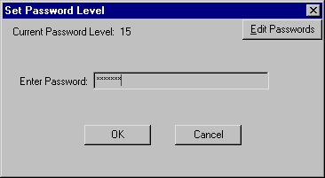

 You are then presented with a dialog box that allows you to enter a new password. Each password has a level and owner associated with it. For example, the Default password is shipped at level 10. the Engineer password is shipped at level 5.
The owner is just a human name. It is only used if you have defined a password change log file.
For password levels, big is good. Each menu item on the main menu has a password level. If you do not have a level at least this big you don't even get to see the menu item.
For example, the Text Editor menu item is shipped at level 10. If you are at the Engineer level, level 5, you won't see the Text Editor menu item when you pull down the File menu.
This isn't a very sophisticated system, however. To change the password levels of the menu items you merely change the entry in the associated menu file.
The main menu file is C:\V5\EXES\PROFILE.MNU. This is just a text file which you can edit with the Visi-Trak Text Editor.
Each line in the file is a menu item or separator. At the end of each line is the password level of the line. The first few lines are shown below.
0,&File,-1,0 1,Choose &Shots...,109,0 1,&Choose Part...,113,0 2,SEPARATOR,-1,0 1,&Backup and Restore,706,5if you change the Backup and Restore line from
1,&Backup and Restore,706,5to
1,&Backup and Restore,706,10then the password level for this item will be raised from 5 to 10. The changes will not take affect until you restart the program or change your current password level.
You can edit the passwords and the levels associated with them if you have a password level of 9 or above or if you level is the highest one in the password list.
The Default password is special. This is the level that the program uses when it is first run.
| COMPUTER_LIST_PASSWORD_LEVEL | 10 | The level at which the list of computers appears on the FasTrak Board Setup screen |
| EDIT_OTHER_COMPUTER_LEVEL | 6 | Level at which you can edit parts on another computer |
| EDIT_OTHER_CURRENT_PART_LEVEL | 10 | Level at which you can edit the current part on another computer |
| ENGINEER_PASSWORD_LEVEL | 5 | You must be at this level in order to save changes in the part editor |
| LOWEST_PASSWORD_LEVEL | 0 | Don't make levels less than zero |
| Ioex4GrayLevel | 15 |
Controls the level at which you can press the following buttons
on the FasTrak Board Interface screen. It is normally 15.
|
| CurrentFtValuesGrayLevel | 9 | Controls the level at which the Read Current Pos./Analog Values menu item appears on the main menu. |
| Ioex4MenuGrayLevel | 9 | Controls the level at which the FasTrak Board Interface menu item appears on the main menu. |
| DowntimePurgeButton | 10 | Enable the Purge Downtimes Button |
| EditOperatorsButton | 10 | Enable the Edit Operators Button |
| EditControlButton | 10 | Enable the Edit the Control Program button in the Service Tools section of the Suretrak Control Interface |
There are two entries that you can put in the [Config] section.
| PasswordLogFile | \\WS0\V5\DATA\PwChange.log | If this is defined then the program adds a record to this log file whenever the password level is changed. The computer name is saved in case you want to use the same file for all computers on a network. |
| PasswordLogFormat | c, d t, n | Format of the log:
|
| ParameterTabEditLevel | 5 | Level at which parameter setups can be changed |
| SetupSheetLevel | 10 | Level at which the setup sheet can be edited |
| EditOtherComputerLevel | 6 | Level at which you can edit the monitor setup of a part on another computer |
| EditOtherCurrentPartLevel | 10 | Level at which you can edit the monitor setup of the current part on another computer |
| EditOtherSuretrakLevel | 6 | Level at which you can edit the suretrak setup of a part on another computer |
| EditOtherCurrentSuretrakLevel | 50 | Level at which you can edit the suretrak setup of the current part on another computer |
| ServiceToolsGrayLevel | 20 | Level at which the setup buttons are active in ft2. |